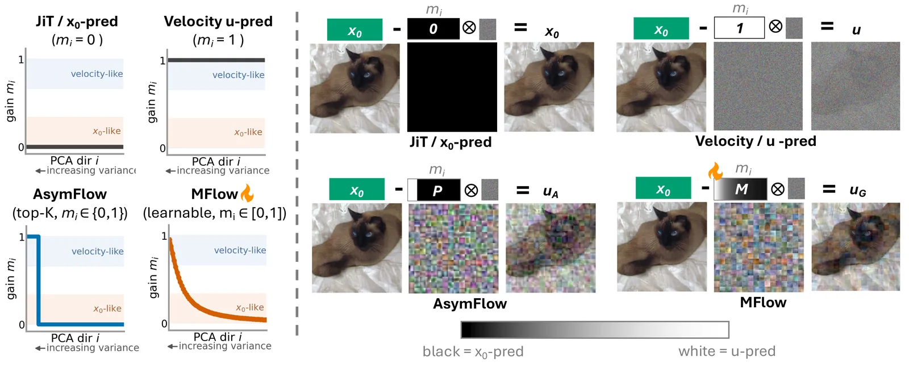
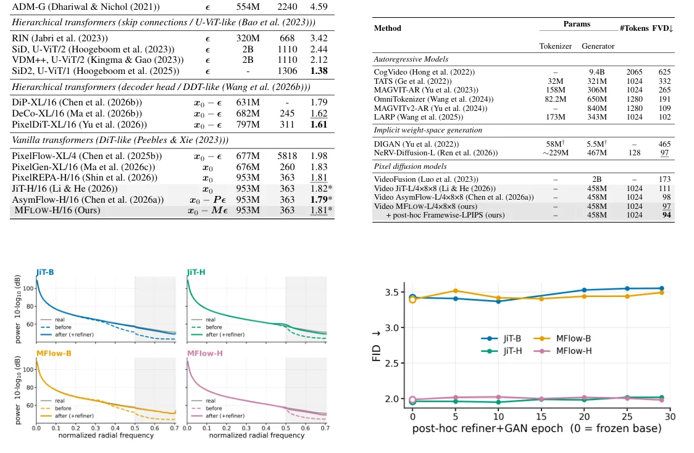

O Retorno dos Pixels: Alem do Espaco Latente
Os modelos de difusao latente (LDMs) dominaram a geracao de imagens nos ultimos anos, mas impoem um custo significativo: a necessidade de um autoencoder separado para comprimir os pixels em um espaco latente de menor dimensao. Essa compressao e, por definicao, com perda (lossy), o que pode levar a reconstrucoes infieis e introduzir artefatos que o modelo gerador nao consegue corrigir facilmente. Em resposta, trabalhos recentes, como o JiT (Jigsaw Transformer), demonstraram que e possivel treinar Diffusion Transformers (DiTs) diretamente no espaco dos pixels brutos, eliminando o gargalo do autoencoder e simplificando a arquitetura.
Apesar da elegancia, a difusao direta em pixels enfrenta desafios computacionais e de representabilidade. Para manter o comprimento da sequencia gerenciavel, o JiT utiliza um patching agressivo (blocos de 16x16 pixels), transformando cada bloco em um unico token. Isso significa que cada token deve modelar um bloco de alta dimensionalidade de pixels brutos. A pergunta central que os autores deste paper revisitam e: qual a melhor forma de parameterizar a previsao nesses blocos de alta dimensionalidade? O JiT optou pela predicao da imagem limpa (x0), mas essa escolha pode nao ser otima para todas as direcoes dos dados ou capacidades de modelo.
Os autores, pesquisadores da University of Maryland e Adobe Research, propoem que a escolha entre prever a imagem limpa (x0) ou a velocidade (u) nao deve ser fixa. Eles introduzem o MFLOW, um mecanismo que aprende, de forma continua e adaptativa, como interpolar entre essas duas previsoes ao longo das direcoes principais dos dados. Alem disso, identificam um deficit persistente de detalhes de alta frequencia nos geradores baseados em JiT e apresentam o ConvRefiner, um modulo leve para corrigir esse problema apos o treinamento principal.
Limitacoes das Parameterizacoes Fixas
Para entender a contribuicao do MFLOW, e necessario examinar as abordagens anteriores. A predicao de imagem limpa (x0), usada no JiT, baseia-se na suposicao de que os dados reais residem em uma variedade de baixa dimensao (manifold), tornando-a mais facil de prever para uma rede subcompleta. No entanto, durante o sampling, converter a previsao de x0 de volta para a velocidade (u) torna-se mal-condicionado (ill-conditioned) em regimes de baixo ruido, onde pequenos erros na estimativa de x0 sao amplificados exponencialmente ao reverter a dinamica do processo de difusao.
Por outro lado, a predicao de velocidade (u) e mais estavel numericamente, mas pode ser dificil para redes menores aprenderem a estrutura complexa dos dados. Trabalhos como o AsymFlow tentaram mitigar isso dividindo o espaco em subespacos: predizendo u em um subespaco de baixa dimensao (PCA) e x0 no complemento. No entanto, essa abordagem exige uma escolha manual e rigida do rank (dimensao) do subespaco, que varia drasticamente entre datasets e configuracoes de modelo. Essa busca por hiperparametros e custosa e requer multiplos treinamentos preliminares para sintonia fina.
Outras abordagens, como a de Jin e Wang, utilizam uma interpolacao global entre x0 e u, mas nao reduzem a dimensionalidade efetiva do ruido nas direcoes mais importantes. O MFLOW se posiciona como uma generalizacao que supera essas limitacoes, permitindo que a modelagem se adapte dinamicamente a estrutura dos dados e a capacidade do modelo, sem a necessidade de selecao manual de subespacos binarios.

MFLOW: Parameterizacao Adaptativa por Direcao
A inovacao central do MFLOW e a introducao de um ganho aprendivel mi in [0, 1] para cada direcao principal dos dados, derivada de uma analise de componentes principais (PCA) realizada nos patches de pixels. Em vez de escolher entre prever x0 ou u, o MFLOW calcula uma combinacao ponderada dessas previsoes. Especificamente, para cada direcao i, o modelo prediz uma saida intermediaria que e uma mistura linear da previsao de imagem limpa e da previsao de velocidade, controlada pelo parametro mi.
Essa formulacao e projetada para ser diferenciavel e compativel com a perda padrao de flow-matching no espaco de velocidade. Isso permite que o modelo de difusao e os ganhos mi sejam treinados simultaneamente de forma end-to-end. O resultado e uma parameterizacao suave que se adapta ao dataset. Se uma direcao principal dos dados e mais facil de modelar como uma imagem limpa (baixa variancia de ruido relativo), o modelo aprendera mi proximo de 0. Se a direcao exige a estabilidade da dinamica de velocidade, mi tendera a 1.
Essa abordagem elimina a necessidade de definir um corte rigido de rank, como no AsymFlow. Em vez de uma mascara binaria que decide quais direcoes usam qual previsao, o MFLOW permite uma transicao suave. Isso e particularmente util porque a estrutura de correlacao dos dados varia entre dominios (imagens estaticas vs. videos) e representacoes (pixels vs. latentes). O modelo descobre automaticamente a personalidade de previsao mais adequada para cada componente dos dados.
Analise das M-Curves: Capacidade e Dados
Um dos insights mais valiosos do paper vem da analise das M-curves, que sao graficos dos valores aprendidos mi ordenados pela variancia decrescente das direcoes principais. Ao visualizar essas curvas, os autores descobrem padroes sistematicos que conectam a escolha da parameterizacao a capacidade do modelo e as estatisticas dos dados.
Primeiramente, observa-se que aumentar a capacidade do modelo (numero de parametros) desloca a preferencia em direcao a predicao de velocidade (u). Modelos menores, com menor capacidade de representacao, beneficiam-se mais da predicao de x0, que atua como um regularizador implicito ao forcar o modelo a focar na estrutura de baixa dimensao dos dados. Modelos maiores, como os usados em geracao de texto-para-imagem em larga escala, tem capacidade suficiente para aprender a dinamica de velocidade diretamente, tornando a predicao de u mais eficiente.
Além disso, a natureza do dominio influencia as M-curvas. Em videos, o numero de direcoes com ganhos nao-negligiveis diminui, sugerindo que a dinamica temporal impoe restricoes diferentes. Em representacoes latentes (como RAEv2), os ganhos colapsam quase totalmente para zero, recuperando uma parameterizacao puramente de x0, o que confirma que a escolha ideal depende da representacao dos dados. Esses resultados indicam que nao existe uma unica melhor parameterizacao universal; ela deve ser adaptada ao contexto especifico de treinamento.
ConvRefiner: Corrigindo o Deficit de Alta Frequencia
Apesar dos avancos na parameterizacao, os autores identificaram um problema persistente nos Transformers de pixels puros (JiT-style): um deficit de alta frequencia. Ao analisar o espectro de frequencia das imagens geradas, constatou-se que elas perdem detalhes finos em comparacao com imagens reais, aparecendo excessivamente suavizadas. Esse deficit nao e resolvido apenas melhorando a parameterizacao da difusao; e uma limitacao arquitetural inerente a forma como os patches grandes sao processados e reconstruidos.
Para abordar isso, os autores propoem o ConvRefiner, um modulo pos-treinamento leve. A ideia e manter o backbone de difusao congelado e adicionar algumas camadas convolucionais leves que predizem um residual sobre a imagem gerada. Esse modulo e treinado usando uma combinacao de perda perceptual (LPIPS) e uma perda adversarial (GAN) baseada em PatchGAN. A perda adversarial e aplicada apenas nas imagens quase limpas (proximas do final do processo de sampling), focando a correcao nos detalhes locais.
Essa estrategia e inspirada em observacoes anteriores de que finetunar apenas as ultimas camadas de um VAE com uma perda adversarial pode melhorar detalhes locais com custo reduzido. O ConvRefiner restaura as estatisticas de alta frequencia das imagens geradas sem afetar significativamente metricas globais de qualidade, como o FID (Fréchet Inception Distance). Isso demonstra que e possivel corrigir falhas estruturais de alta frequencia sem retreinar todo o modelo generativo complexo.

Avaliacao em Imagens e Videos
Os autores avaliaram o MFLOW em geracao de imagens condicionadas por classe no ImageNet-1K (256x256) e geracao de videos no UCF-101. No ImageNet, em configuracoes base (B-level), o MFLOW com perda LPIPS superou o JiT e o AsymFlow, alcancando o melhor FID entre os modelos avaliados. Isso sugere que a adaptacao continua do MFLOW, combinada com a regularizacao perceptual, e mais robusta que as buscas manuais de rank do AsymFlow.
Em escalas maiores (H-level), o MFLOW permaneceu competitivo, embora o AsymFlow tenha mostrado uma leve vantagem em algumas metricas, possivelmente devido a um ajuste mais agressivo de hiperparametros especifico para o ImageNet. No entanto, o MFLOW atingiu esse desempenho sem a necessidade de ciclos extensivos de busca de parameterizacao, oferecendo uma solucao mais automatica e generalizavel.
Para videos, o MFLOW foi aplicado com sucesso usando patches temporais (4x8x8). As M-curvas para videos mostraram uma reducao nas direcoes com ganhos significativos, consistente com a hipotese de que a dinamica temporal altera a estrutura de variancia dos dados. O modelo conseguiu gerar videos de alta qualidade, validando a extensao do MFLOW para dominios sequenciais.
Geracao de Texto-para-Imagem em Larga Escala
O teste mais ambicioso foi a geracao de texto-para-imagem (T2I) usando um modelo de grande escala (XXL/16) treinado em um dataset interno de cerca de 900 milhoes de imagens para pre-treinamento e 33,5 milhoes para ajuste fino (SFT). Nesse cenario, as M-curvas revelaram claramente o efeito da capacidade do modelo: a medida que a capacidade aumenta, mais direcoes sao alocadas para predicao de velocidade (u).
Essa descoberta e crucial para o scaling de modelos generativos. Ela sugere que, para modelos muito grandes, a predicao de velocidade se torna mais vantajosa, provavelmente porque a rede tem parametros suficientes para aprender a dinamica complexa do ruido sem a regularizacao implicita da predicao de x0. O MFLOW permite que o modelo explore essa capacidade extra de forma adaptativa, sem intervencao humana para redefinir subespacos.
Os resultados de qualidade visual (Figura 1) mostram geracoes realistas em 512px, e as metricas em benchmarks como GenEval e DPG-Bench foram competitivas. A combinacao do MFLOW com o ConvRefiner ajudou a mitigar o deficit de alta frequencia que poderia ser exacerbado em resolucoes mais altas, mantendo a fidelidade dos detalhes finos.
Limitacoes e Consideracoes Finais
Apesar dos resultados promissores, o paper nao ignora as limitacoes. O ConvRefiner, embora eficaz, e um modulo post-hoc. Isso significa que ele adiciona uma etapa de inferencia e um pequeno overhead computacional. Alem disso, a eficacia do ConvRefiner depende da qualidade do backbone de difusao; se o modelo base falhar em capturar a estrutura global da imagem, o refinador convolucional local nao podera corrigir erros semanticos maiores.
Outra limitacao e a dependencia da analise PCA para definir as direcoes principais. Em datasets extremamente grandes ou de alta dimensionalidade, o calculo da PCA pode ser computacionalmente intensivo, embora os autores afirmem seguir metodos eficientes similares ao AsymFlow. Alem disso, a adaptacao automatica das M-curves requer monitoramento para garantir que os ganhos mi nao colapsem para valores triviais em configuracoes de treinamento instaveis.
Os autores tambem destacam que a escolha da parameterizacao nao e a unica variavel. A arquitetura do patching, o tamanho do patch e a presenca de perdas auxiliares (como LPIPS) interagem complexamente com o MFLOW. Por exemplo, a adicao de LPIPS tende a empurrar as direcoes para a predicao de x0, sugerindo que a regularizacao perceptual altera a estrutura de variancia efetiva que o modelo tenta aprender.
Conclusao
O paper Rethinking the Design Space of Vanilla Pixel Diffusion Transformers oferece uma revisao critica e uma melhoria significativa para a difusao direta em pixels. Ao introduzir o MFLOW, os autores substituem a escolha binaria e manual entre predicao de imagem e velocidade por uma parameterizacao continua e adaptativa. Isso simplifica o pipeline de treinamento e melhora a robustez em diferentes dominios e capacidades de modelo.
A introducao do ConvRefiner complementa essa abordagem ao tratar explicitamente o deficit de alta frequencia, um problema que a parameterizacao sozinha nao resolve. Juntos, esses componentes demonstram que os Transformers de pixels puros podem ser escalados e refinados para competir com os modelos latentes, oferecendo uma alternativa mais direta e potencialmente mais fiel aos dados brutos.
Para pesquisadores e engenheiros de ML, este trabalho destaca a importancia de nao tratar a parameterizacao da perda como um hiperparametro fixo, mas como uma propriedade dinamica que deve ser aprendida junto com o modelo. A analise das M-curves fornece uma nova ferramenta de diagnostico para entender como os modelos de difusao distribuem sua capacidade de aprendizado entre diferentes frequencias e direcoes dos dados.
O que fica
- MFLOW aprende automaticamente quanto predizer imagem limpa (x0) versus velocidade (u) por direcao principal dos dados, eliminando a necessidade de busca manual de hiperparametros.
- Modelos maiores tendem a preferir predicao de velocidade, enquanto dados com representacao mais compacta favorecem a predicao de imagem limpa.
- Transformers de pixels puros sofrem de deficit de alta frequencia; o ConvRefiner resolve isso pos-treinamento sem degradar metricas como FID.
- A abordagem e geral, funcionando para imagens, videos e latentes de alta dimensao, mas requer analise cuidadosa das curvas de ganho (M-curves).
Paper original: Rethinking the design space of Vanilla Pixel Diffusion Transformers
Comentários
Nenhum comentário ainda. Seja o primeiro.